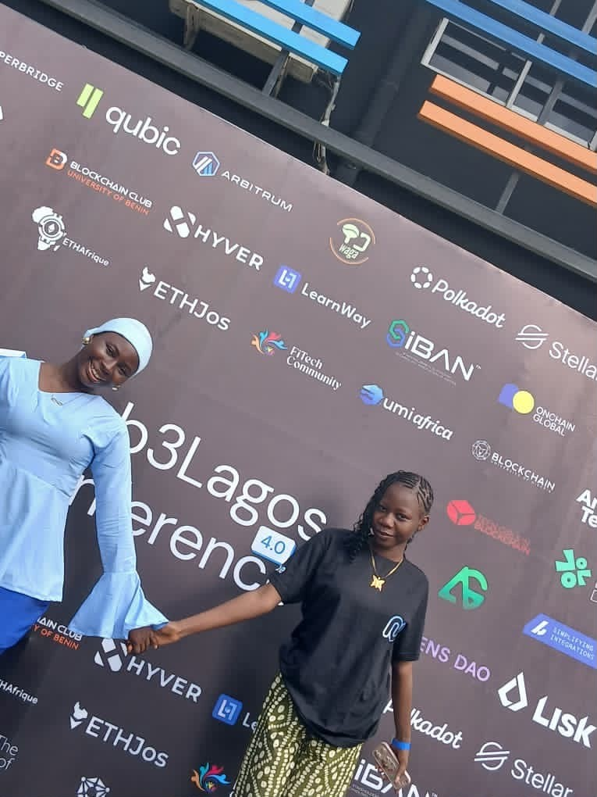

Site settings
Admin profile
Choose the photo that belongs in the home-page frame. Save it into your website folder so it stays with the site.
Olashile's siteLocal site administrator
Home-page photo
Your selected image is saved as assets/sister-photo.jpg.

Current home-page photoor choose a new photo
Choose a photo to enable saving.
Photo saving works when this page is served by the local dev_server.py. GitHub Pages cannot accept uploads. After saving locally, commit and push assets/sister-photo.jpg with the site to publish it.